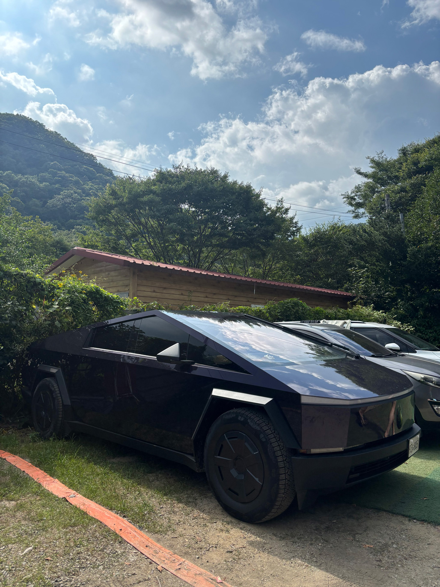
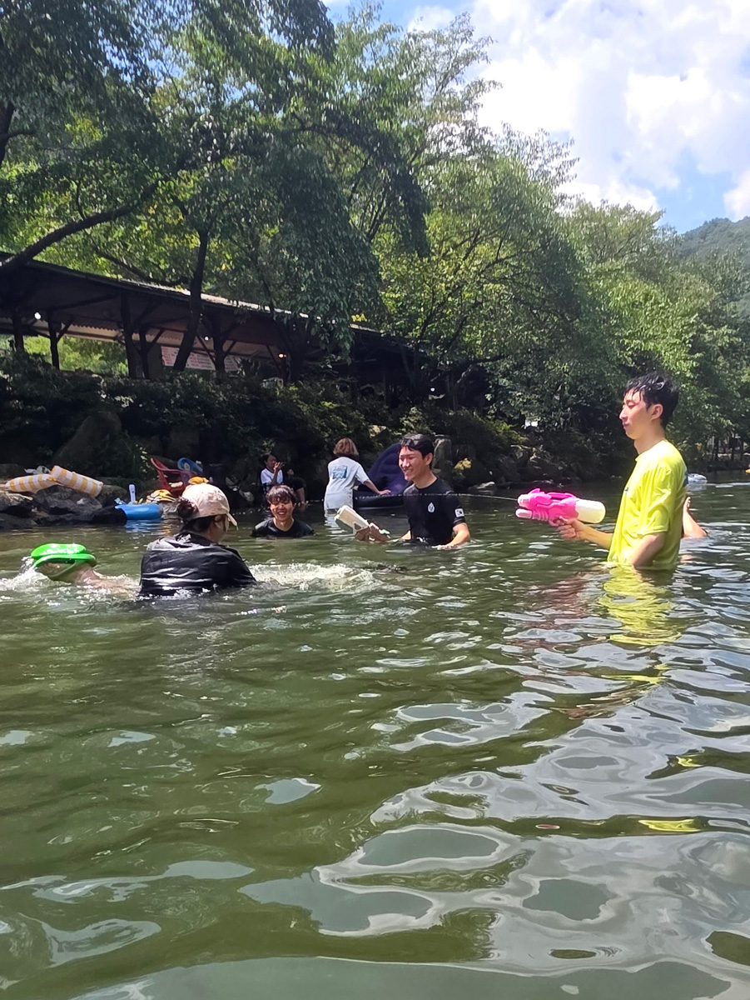
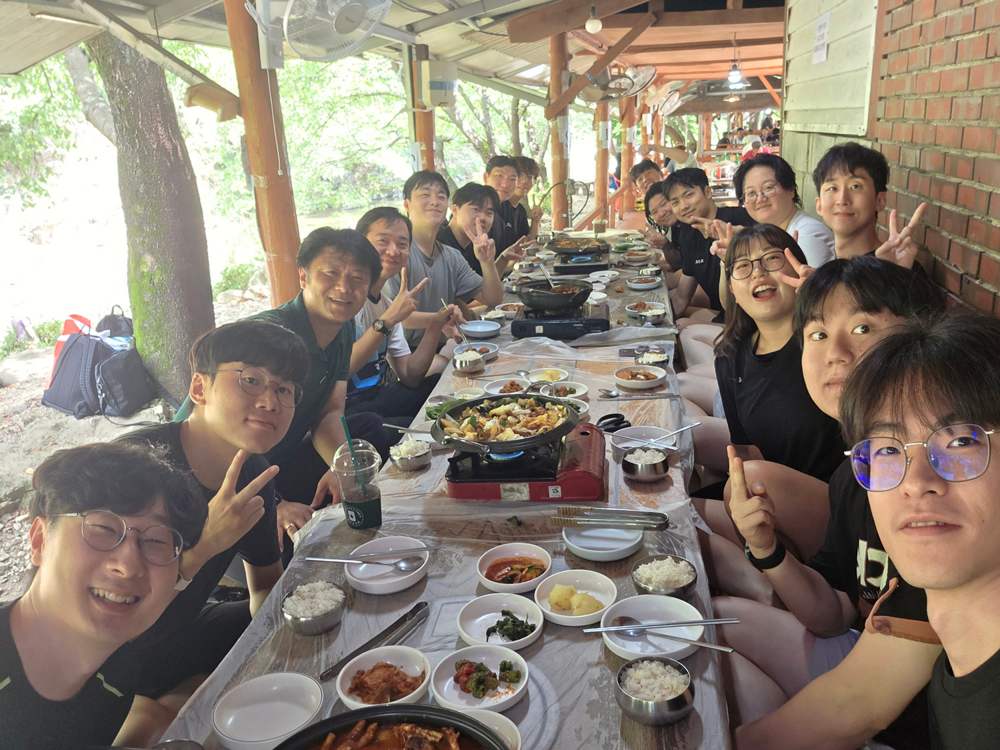
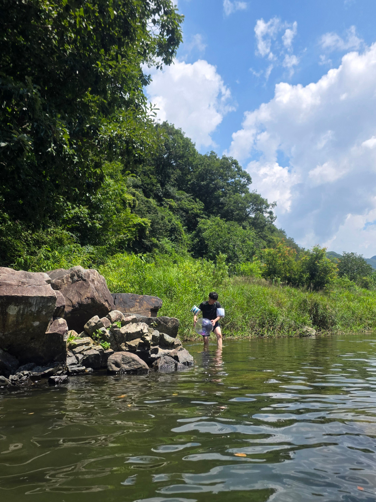
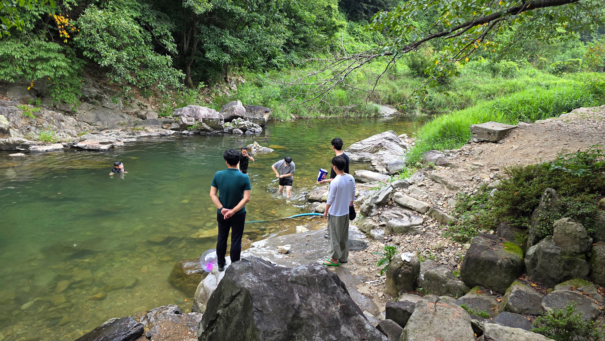
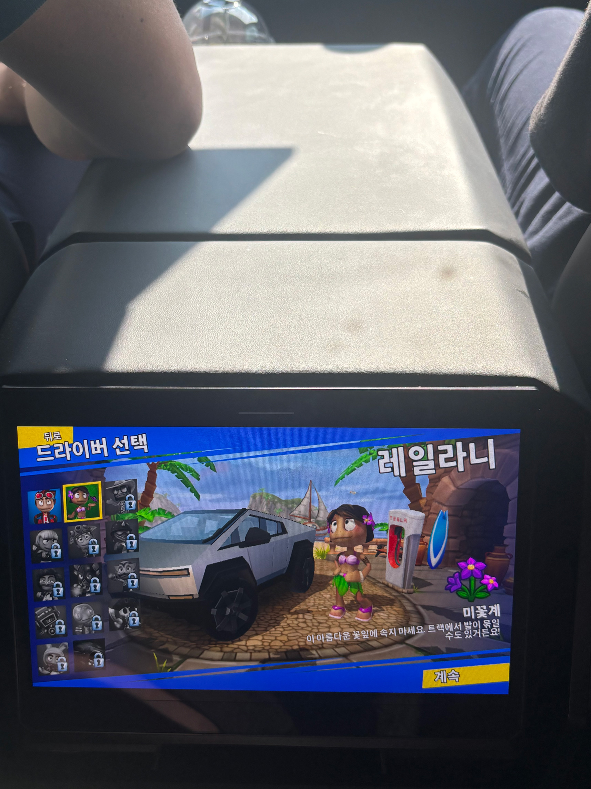
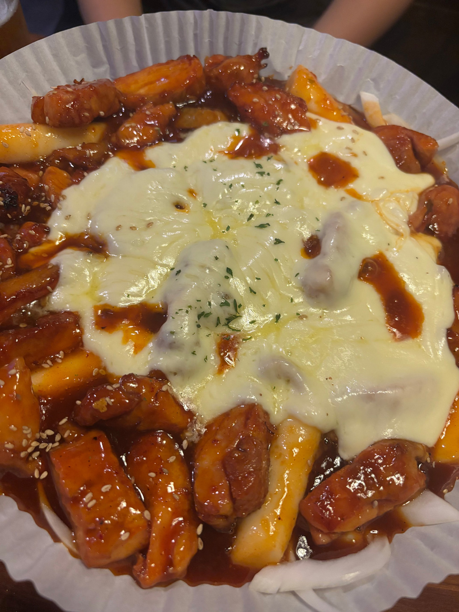
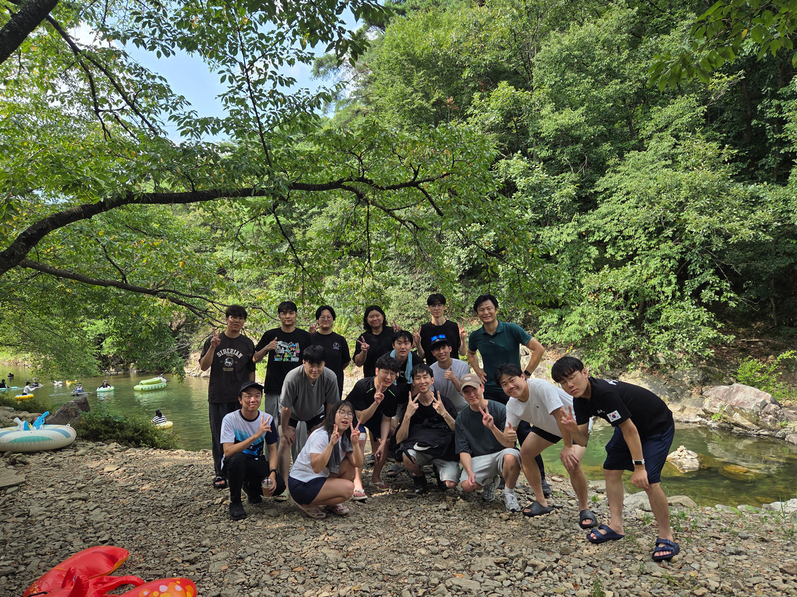

작성자: 김채린
지난 8월 5일, 우리 연구실은 전북 완주에 있는 대추나무산장으로 여름 워크숍을 다녀왔습니다! 이날 만큼은 연구 생각은 잠시 내려놓고, 시원한 계곡에서 물놀이도 하고 맛있는 음식과 술도 즐기며 정말 원 없이 웃고 놀았습니다. 출발할 때부터 마지막 술자리까지 재미있는 일이 끊이지 않았던, 여름을 한껏 즐기고 온 하루였습니다!
박수영, 김채린, 이승민, 현희섭 네 명은 교수님의 사이버트럭을 타고 완주로 향했습니다. 사실 출발 전부터 가장 기대했던 것은 역시 자율주행이었는데요. 한 시간 반이 넘는 거리를 차가 알아서 달리는 모습을 바로 옆에서 보고 있으니 진짜 너무 신기했습니다. 처음에는 계속 앞을 보며 조마조마했지만, 시간이 지나니 어느새 자연스럽게 자율주행을 즐기고 있었어요.
특히 가장 놀라웠던 순간은 계곡 입구의 아주 좁은 길을 지날 때였습니다. 사람이 운전해도 긴장할 것 같은 길을 사이버트럭이 혼자 척척 빠져나가는데, 다 같이 “이게 진짜 된다고?” 싶을 정도로 신기해하며 구경했습니다. 목적지에 도착하기도 전에 차 안에서부터 워크숍의 재미가 시작된 기분이었어요.

대추나무산장에 도착한 뒤에는 마트에서 장을 보고 오는 팀을 기다리며 먼저 계곡물에 들어갔습니다. 물이 너무 차가우면 어쩌나 살짝 걱정했는데, 막상 들어가 보니 덥지도 춥지도 않게 딱 기분 좋은 온도였어요. 첫발을 담그자마자 “아, 놀러 왔구나!” 하는 기분이 확 들었습니다.
물도 맑고 시원해서 잠깐만 놀 생각이었는데, 생각보다 너무 좋아 자연스럽게 물에서 계속 놀게 됐습니다. 이동하면서 쌓였던 피로도 금세 사라지고, 도착하자마자 다들 금세 신이 났어요! (이 때 사진은 못 구해서 다같이 신나게 노는 사진으로 대체할게요...!)

그렇게 20~30분 정도 먼저 물놀이를 즐기다 보니 마트에서 장을 본 팀도 도착했습니다. 이 전에 주문해 둔 닭볶음탕과 주물럭까지 나와 다 같이 자리에 앉았어요. 물에서 놀고 나와 살짝 배가 고팠던 데다 계곡 옆에서 먹으니 음식이 평소보다 몇 배는 더 맛있게 느껴졌습니다.
뜨끈한 닭볶음탕과 맛있는 주물럭, 거기에 시원한 맥주까지 곁들이니 조합이 정말 완벽했습니다. 다 같이 먹고 마시며 이야기하다 보니 분위기도 금세 더 신나졌고, 본격적인 물놀이를 위한 에너지도 든든하게 충전했습니다!

배를 든든하게 채운 뒤에는 다 함께 본격적으로 물놀이를 시작했습니다. 두세 시간 동안 계곡을 오가며 놀고, 다 같이 공놀이도 했는데요. 특별한 프로그램이 없어도 공 하나만 있으면 모두가 자연스럽게 어울려 신나게 놀 수 있었습니다.
공을 던지고 받으면서 장난도 치고, 물도 튀기고, 여기저기서 계속 웃음이 터졌습니다. 두세 시간이나 놀았는데도 시간이 정말 순식간에 지나간 것처럼 느껴졌어요. 말 그대로 모두가 하하호호 웃으며 여름을 한껏 즐긴 시간이었습니다! (아쉬운 건 너무 노는데 집중하느라 공 놀이 하는 사진은 없네요…)


신나게 물놀이를 마친 뒤 모두 옷을 갈아입고, 다시 왔던 차를 타고 학교로 돌아갔습니다. 그런데 돌아오는 길에도 재미있는 일이 남아 있었어요. 교수님 차 뒷좌석에 있는 패드를 이것저것 눌러보며 장난치다가, 그 화면으로 게임까지 할 수 있다는 사실을 발견했습니다!
저와 인턴 두 명은 바로 게임에 빠져 함께 열심히 플레이했습니다. 차 안이라는 것도 잊고 정신없이 게임을 즐기다 보니 어느새 학교에 도착해 있었어요. 갈 때는 자율주행에 놀라고, 돌아올 때는 차 안에서 게임까지 하며 사이버트럭을 아주 알차게 체험했습니다. 저도 돈 많이 벌어서 언젠가는 꼭 이런 차를 사고 싶어요. ㅜㅜ

학교에 도착한 뒤 교수님께서는 일이 있으셔서 먼저 가셨고, 마찬가지로 일이 있었던 Thanh을 제외한 나머지는 저녁에 다시 모여 술을 마시기로 했습니다. 물놀이로 하루가 끝난 줄 알았지만, 사실 진짜 워크숍의 밤은 이제부터 시작이었어요!
각자 씻고 오후 6시 30분까지 훌랄라치킨에 다시 모였습니다. 신나게 놀고 난 뒤 먹는 치킨은 역시 맛이 없을 수가 없었습니다. 다들 피곤할 법도 했지만 낮의 흥이 그대로 이어져, 치킨과 술을 즐기며 계속 이야기하고 웃었습니다.
이후 조권승, 성지윤, 김민석, 박수영, 이한결, 김채린, 현희섭 일곱 명은 2차까지 함께했습니다. 특히 그날 복싱을 하려고 술도 마시지 않고 있던 민석 선배가 결국 복싱장에 못 가게 되면서(?) 술집에서 지윤 선배와 즉석 권투를 선보여줬습니다. 갑자기 시작된 권투에 다 같이 웃음이 터졌고, 덕분에 술자리 분위기는 더 신나졌습니다. 마지막까지 웃고 떠들며 유쾌하게 마무리한 워크숍의 밤이었어요! (복싱 사진은 내수용으로 간직할게요!)

시원한 계곡에서 마음껏 물놀이하고, 맛있는 음식과 술을 먹고, 차 안에서는 게임까지 하며 알차게 놀았던 하루였습니다. 무엇보다 연구실 구성원 모두가 편하게 장난치고 어울리는 모습을 보면서 우리 연구실의 좋은 분위기를 다시 한번 느낄 수 있었어요.
출발할 때 탔던 사이버트럭부터 계곡 물놀이와 공놀이, 저녁 치킨과 2차 술자리까지 어느 하나 재미없었던 순간이 없었습니다. 하루 종일 웃고 즐긴 만큼 오래 기억에 남을 것 같은, 신나고 즐거운 여름 워크숍이었습니다!

허필원 교수님을 비롯해 조권승, 성지윤, 차명주, 문선웅, Van Thanh Nguyen, 박수영, 김민석, 배성환, 박제현, 김래헌, 양용승, 이한결, 김채린, 이승민, 현희섭